")
Secrets and Krypt Guide
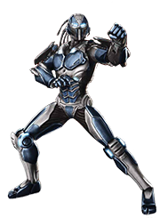Hidden Kombatants
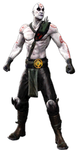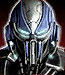
Play as Cyber Sub-Zero:
Win the fight against Cyber Sub-Zero in Story mode with Kabal.
(Chapter 13: Kabal, Fight 3)
Play as Quanchi:
Finish Story Mode.
Secret Fights
Reptile (MK1):
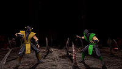{kind=link}
Perform Double Flawless Victory and a Stage Fatality if you see a shadow fly across the moon on the Pit Stage. After the battle is over you will be taken to the Bottom of the Pit where you will have to fight the version of Reptile from the original Mortal Kombat 1 (1992). His Special Moves include Scorpion's Spear and Sub-Zero's Freeze among others.
Tip:
If you do not see the shadows (the witch or santa) fly accros the moon during the first 10-15 seconds of the round, just restart the match by selecting a new fighter and try again until the shadows appear. If you don't want this to be counted as a lost match, defeat your opponent and select a new fighter when Finish Him/Her shows up.
Click to watch a video example
Smoke (MK2):
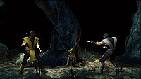{kind=link}
Press the Back-Button (XBox 360)/Select (PlayStation) + Down when Smoke appears behind one of the trees in Living Forest. Your opponent will be immediately killed and you will have to fight against Klassic Smoke. This version of Smoke has a spear and is similar to Smoke from Mortal Kombat II. You will get 2000 koins for every round you win against him.
Tip:
If Smoke does not show up during the first 10-15 seconds of the round, just restart the match by selecting a new fighter and try again until he does. If you don't want this to be counted as a lost match, defeat your opponent and select a new fighter when Finish Him/Her shows up.
Click to watch a video example
Classic Jade:
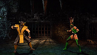{kind=link}
Reach Shang Tsung without loosing even a round. Perform Double Flawless Victory and Fatality while fighting Shang Tsung.
Tip:
The easiest way to do this is to set the difficulty to easiest mode and the round time to minimum. If you get hit by Shang Tsung, defeat him and when "Finish Him" appears select a new fighter, this way you will be able to try again. This version of Jade will use Kitana's fans, just like in Mortal Kombat II but will have Jade's Ultimate Mortal Kombat 3 outfit. You will get 5000 koins for every won round against Jade.
Click to watch a video example
Classic Noob Saibot:
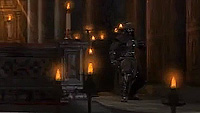{kind=link}
Defeat your opponent without Blocking if you see Noob Saibot standing on the right side of the alter in the Church. Noob Saibot will be there at the begining of the round or not at all. He will stay on the screen until you use Block. This Noob Saibot will be all black, just like in Mortal Kombat II and Mortal Kombat 3.
Tip:
If Noob Saibot is not on the arena at the begining of the round, just restart the match by selecting a new fighter and try again until he appears. If you don't want this to be counted as a lost match, defeat your opponent and select a new fighter when Finish Him/Her shows up.
Click to watch a video example
Always Fight Goro in Ladder Mode
At the 'Character' selection screen in Ladder mode select a character and hold 'Select' when choosing a difficulty setting. The will make the game default to include Goro instead of Kintaro in the boss fight.
Klassik Arena Music
During Player Select in VS Mode, go to the Arena Select Menu, and choose the arena by pressing START instead of FP. This will choange the background music back to the original soundtrack from the 90s. You will hear a laugh for confirmation
Babality on sub-boss and boss
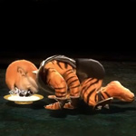 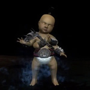 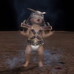{kind=link}
{kind=link}
{kind=link}
Perform a Babality on every fighter in Arcade Ladder without loosing a match. When you reach a boss characters, Babalities will be performed automatically on them when you win the match. Don't block an attack during the final round against the boss character, just as if you are going to perform the Babality manualy.
Click to watch a video example
Krypt Monster
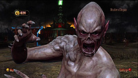{kind=link}
If you spend a good amount of time in the Krypt a monster will show up on the screen. Try waiting still for a couple of minutes and it might just show up.
Click to watch a video example
Back to top
Kombat Kodes:
On the VS screen (in 2 player mode), you can cycle through the 6 symbols. The numbers below are the number of times you need to change the symbol.
911-911 - Armless Kombat 020-020 - Blocking Disabled 090-090 - Breakers Disabled 022-022 - Dark Kombat 001-001 - Disable Foreground Objects 391-193 - Double Dash 222-555 - Dream Kombat 051-150 - Enhanced Moves Disabled 227-227 - Explosive Kombat 012-012 - Health Recovery 808-808 - Headless Kombat 091-091 - Hyper Fighting 770-770 - Invisible Kombat 831-831 - Jumping Disabled 101-101 - Klassic Music 931-931 - Kombos Disabled 900-900 - No Blood 110-000 - Player 1 Half Health 000-110 - Player 2 Half Health 220-000 - Player 1 Quarter Health 000-220 - Player 2 Quarter Health 404-404 - Power Bars Disabled 707-707 - Psycho Kombat 303-303 - Quick Uppercut Recovery 234-234 - Rainbow Kombat 717–313 – Random Phrase 1: “Don’t defend in a temple corrupted with shadow.” 448–844 – Random Phrase 2: “The krypt walls hold secrets.” 122–221 – Random Phrase 2: “What lurks at the bottom of The Pit?” 009–009 – Random Phrase 2: “?SUNOB YTSAOT” 550–055 – Random Phrase 2: “Who hides in the forest?” 031–130 – Random Phrase 2: “Motaro Transformation?” 282–282 – Random Phrase 2: “She waits for you at the top of the tower…” 123–926 – Random Phrase 2: “Thanks for karing!” 044-440 - Sans Power 300-300 - Silent Kombat 731-731 - Specials Disabled 123-123 - Super Recovery 010-010 - Throwing Encouraged 100-100 - Throwing Disabled 111-111 - Tournament Mode 466-466 - Unlimited Super Meter 424-424 - Vampire Kombat 242-242 - X-Rays Disabled 666-666 - Zombie Kombat
Back to top
Krypt Secret Locations
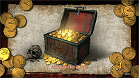{kind=link}
Every area of the Krypt has a secret treasure chest that will give you 5000 extra Koins. The clues to the locations of the secret trasure chests are the green bugs, located on the ground near them. When you locate the green bugs watch them until the game zooms on them and allows a purchase. As an alternative, when you find them, zoom out to the map and then zoom back in to your location and you will be able to purchase them imeediately. Secret Treasure Chests Map Use our map and the following instructions to find the 4 secret treasure chests:
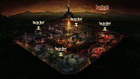
{kind=link}
- Deadlands (SEC1): Between DL52 and DL66
- Hollow of Infestation (SEC2): Go to the start of the area (near to river) and follow the wall along six heads
- Bloodmarsh (SEC3): In the right of BM81 (under the head on the wall)
- Meadow of Despair (SEC4): in the left of MD52 (near to Nekropolis)
Click to watch a video example
Back to top
The Krypt Content
Deadlands:
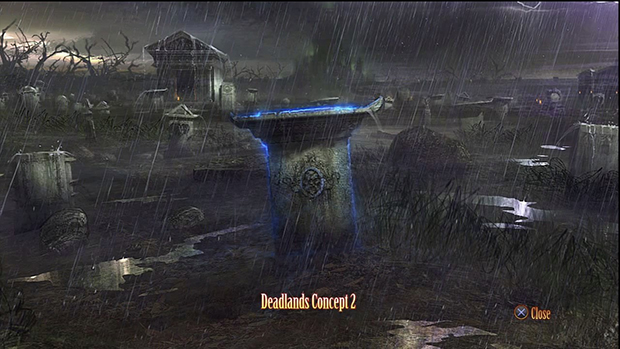
1. Free Grave
2. Temple Music
3. Johnny Cage Fatality Sketch
4. Dead Pool Concept
5. Jade Fatality (Half Mast)
6. Stryker Primary Costume Concept
7. Reptile Alternate Costume Concept
8. Pit (Night) Concept
9. Wasteland Music
10. Blocking Disabled (020 020)
11. Cyber Sub-Zero Concept
12. Jumping Disabled (831 831)
13. Evil Monastery Concept
14. Kitana Primary Costume Concept
15. Johnny Cage Alternate Costume Concept
16. Rooftop (Dawn) Concept
17. No Blood (900 900)
18. Hell Speed Painting 2
19. Sonya Fatality Sketch
20. Scorpion Shadow Render
21. Ermac Fatality (Pest Control)
22. Tormentor Model
23. Sektor Fatality Sketch
24. Noob Primary Costume Concept
25. Dark Kombat (022 022)
26. Armory Music
27. Sonya Primary Costume Concept
28. Sheeva Alternate Costume Concept
29. TaiGore Model
30. Kano Fatality Sketch
31. Raiden Render
32. Hyper Fighting (091 091)
33. Armory Concept
34. Baraka Alternate Damage Concept
35. Scorpion Fatality Sketch
36. Mileena Reveal Render
37. Kabal Fatality (It Takes Guts)
38. Courtyard (Night) Concept
39. Jax Primary Costume Concept
40. Baraka Alternate Costume Concept
41. Sindel Render
42. Flesh Pits Concept
43. Health Recovery (012 012)
44. Scorpion Reveal Render
45. Dead Pool Victim Concepts
46. Ermac Primary Costume Concept
47. Sektor Alternate Costume Concept
48. Courtyard (Night) Music
49. Courtyard Speed Painting 2
50. Kombos Disabled (931 931)
51. Scorpion Primary Costume Concept
52. Kano Primary Costume Concept
53. Hell Fatality Sketch
54. Shao Kahn's Throne Room Concept
55. DeadPool Speed Painting 1
56. Stryker Alternate Costume Concept
57. Desert Speed Painting 2
58. Rooftop (Dusk) Music
59. Armory Speed Painting 2
60. Graveyard Speed Painting 1
61. Desert Music62. Sindel Primary Costume Concept
63. Quan Chi Alternate Costume Concept
64. Kabal Fatality Sketch
65. Shao Khan Render
66. DeadPool Speed Painting 2
67. Pit (Day) Concept
68. Koliseum Speed Painting 2
69. Kitana Alternate Costume Concept
70. Kabal Primary Costume Concept
71. Graveyard Music
72. Desert Speed Painting 1
73. Disable Foreground Objects (001 001)
74. Sub-Zero Render
75. Flesh Pits Speed Painting 1
76. Kabal Fatality Sketch
77. Goro's Lair Speed Painting 1
78. Jade Render
79. Johnny Cage Fatality (And The Winner Is)
80. Retro Sub-Zero Render
81. Flesh Pits Speed Painting 2
82. Sonya Alternate Damage Concept
83. Power Bars Disabled (404 404)
84. Shao Kahn Concept
85. Soul Chamber Music
86. Sheeva Primary Damage Concept
87. Mileena Primary Costume Concept
88. Kabal Alternate Costume Concept
89. Noob Primary Damage Concept
90. Courtyard (Day) Concept
91. Smoke Primary Costume Concept
92. Jax Fatality (Three Points!)
93. Ermac Alternate Damage Concept
94. Shao Khan's Throne Room Music
95. Bell Tower Speed Painting 1
96. Psycho Kombat (707 707)
97. Bell Tower Speed Painting 2
98. Hell Music
99. Raiden Alternate Damage Concept
100. Raiden Primary Costume Concept
101. Shang Tsung Alternate Costume Concept
102. Rooftop (Dusk) Concept
103. Kano Alternate Damage Concept
104. Cerberus Model
105. Unlimited Super Meter (466 466)
106. Sub-Zero Reveal Render
107. Goro's Lair Concept
108. Shang Tsung's Garden (Night) Concept
109. Sindel Alternate Damage Concept
110. Nightwolf Alternate Costume Concept
111. Courtyard Speed Painting 1
112. Graveyard Speed Painting 2
113. Dream Kombat (222 555)
114. Evil Monastery Music
115. Mileena Primary Damage Concept
116. Explosive Kombat (227 227)
117. Sheeva Alternate Damage Concept
118. Retro Scorpion Render
119. Scorpion Alternate Costume
120. Cyrax Fatality (Nothing But Net)
121. Living Forest Speed Painting 1
Back to top
Bloodmarsh (BM XX):
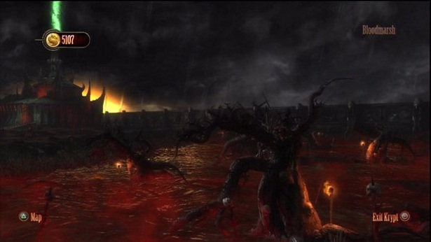
1. Living Forest Speed Painting 2
2. Mileena Fatality (Rip Off)
3. Shang Tsung's Throne Room Concept Art
4. Evil Monastery Speed Painting 2
5. Noob Saibot Alternate Costume Render
6. Sonya Render
7. Noob Alternate Damage Concept
8. Noob Saibot Fatality (As One)
9. Dragon Concept
10. Retro Ermac Render
11. Rainbow Kombat (234 234)
12. Kung Lao Alternate Damage Concept
13. Sektor Primary Costume Concept
14. Raiden Fatality (Transplant)
15. Shang Tsung Primary Damage concept
16. Shang Tsung Throne Room Music
17. Temple Speed Painting 2
18. Jax Primary Damage Concept
19. Sindel Alternate Costume
20. Dead Pool Music21. Sub Zero Primary Costume Concept
22. Rooftop Dusk Speed Painting 2
23. Kitana Fatality (Splitting Headache)
24. Street Concept
25. Throne Speed Painting
26. Smoke Fatality (Tremor)27. Nightwolf Primary Costume Concept
28. Soul Chamber Speed Painting 1
29. Ermac Primary Damage Concept
30. Sans Power (044 440)
31. Liu Kang Primary Costume Concept
32. Sonya Blade Damage Concept
33. Shang Tsung's Garden Speed Painting 2
34. Liu Kang Alternate Damage Concept
35. Sonya Fatality (Kut Throat)
36. Soul Chamber Speed Painting 2
37. Mileena Shadow Render
38. Kung Lao Alternate Costume Concept
39. Street Speed Painting 2
40. Nekropolis Concept 2
41. Silent Kombat (300 300)
42. Living Forest Music
43. Parasite Victims Render
44. Sindel Fatality (Mouthful)
45. Liu Kang Concept
46. Deadlands Concept 2
47. Specials Disabled (731 731)
48. Liu Kang Primary Damage Concept
49. Meadow of Despair Concept 1
50. Jade Alternate Costume Concept
51. Temple Speed Painting 1
52. Jade Primary Damage Concept
53. Evil Monastery Speed Painting 1
54. Super Recovery (123 123)
55. Nightwolf Alternate Damage Concept
56. Wasteland Speed Painting 2
57. Stryker Fatality (Have A Blast)
58. Baraka Primary Costume Concept
59. Nekropolis Concept
60. Throwing Encouraged (010 010)
61. Temple Concept
62. Shang Tsung's Garden (Night) Music
63. Cyber Sub-Zero Fatality (Brain Freeze)
64. Tournament Mode (111 111)
65. Subway Speed Painting 1
66. Reptile Fatality Sketch
67. Goro Damage Concept
68. Ermac Alternate Costume Concept
69. Wasteland Concept
70. Meadow of Despair Concept 3
71. Shang Tsung's Throne Room Speed Painting 1
72. Scorpion Fatality (Nether Gates)
73. Hallow of Infestation Concept 1
74. Scorpion Fatality Sketch
75. Cyrax Render
76. Reptile Primary Damage Concept
77. Zombie Kombat (666 666)
78. Subway Concept
79. Rooftop (Day) Speed Painting 1
80. Koliseum Music
81. Reptile Primary Costume Concept
82. Smoke Alternate Costume Concept
83. Mileena Alternate Damage Concept
Back to top
Hollow Of Infestation
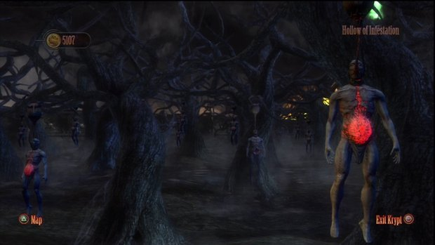
1. Koliseum Concept
2. Kung Lao Primary Costume Concept
3. Koliseum Speed Painting 1
4. Baraka Fatality (Take A Spin)
5. Living Forest Concept
6. Street Music
7. Shao Kahn Damage Concept
8. Liu Kang Alternate Costume
9. Cyrax Alternate Damage Concept
10. Rooftop (Day) Concept
11. Graveyard Concept
12. Shang Tsung Fatality (Identity Theft)
13. Shang Tsung Alternate Damage Concept
14. Armory Speed Painting 1
15. Enhance Moves Disabled (051 150)
16. Soul Chamber Concept
17. Jade Primary Costume Concept
18. Kano Fatality (Eat Your Heart Out)
19. Goro's Lair Speed Painting 2
20. Sheeva Primary Costume Concept
21. Subway Speed Painting 2
22. Sonya Blade Alternate Costume
23. Shang Tsung's Throne Room Speed Painting 2
24. X-Rays Disabled (242 242)
25. Executioner Concepts
26. Bell Tower Music
27. Shang Tsung's Garden (Day) Concept
28. Liu Kang Fatality (Beast Within)
29. Bell Tower Concept
30. Quan Chi Fatality Sketch
31. Reptile Alternate Damage Concept
32. Sektor Primary Damage Concept
33. Mileena Alternate Costume
34. Shang Tsung Primary Costume Concept
35. Courtyard (Day) Music
36. Johnny Cage Primary Damage Concept
37. Quick Uppercut Recovery (303 303)
38. Goro's Lair Music
39. Quan Chi Fatality (On Your Knees)
40. Sindel Primary Damage Concept
Back to top
Meadow Of Despair
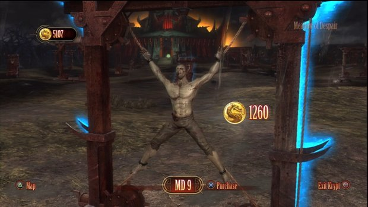
1. Rooftop (Dusk) Speed Painting 1
2. Nightwolf Fatality (Ascension)
3. Living Forest Trees Concept
4. Flesh Pits Music
5. Nekropolis Concept 6
6. Cyrax Alternate Costume
7. Cyrax Primary Costume Concept
8. Nekropolis Concept 3
9. Armless Kombat (911 911)
10. Rooftop (Dawn) Speed Painting 1
11. Sektor Fatality (The Scarcrow)
12. Jax Alternate Damage Concept
13. Meadow Of Despair Concept 2
14. Raiden Alternate Costume
15. Street Speed Painting 1
16. Rooftop (Dawn) Speed Painting 2
17. Breakers Disabled (090 090)
18. Pit Bottom Concept
19. Hallow Of Infestation Concept 2
20. Johnny Cage Primary Costume Concept
21. Sheeva Fatality (Lend A Hand)
22. Desert Concept
23. Kitana Alternate Damage Concept
24. Jade Alternate Damage Concept
25. Kano Alternate Costume
26. Rooftop (Day) Speed Painting 2
27. Retro Reptile Render
28. Throwing Disabled (100 100)
29. Shang Tsung's Throne Room Concept B
30. Shang Tsung's Garden Speed Painting 1
31. Kung Lao Fatality (Razor's Edge)
32. Kitana Primary Damage Concept
33. Subway Music
34. Kano Primary Damage Concept
35. Baraka Primary Damage Concept
36. Jax Alternate Costume
37. Goro Render
38. Early Krypt Entrance Concept 3
39. Invisible Kombat (770 770)
40. Jax Render
41. Blood Marsh Concept 2
42. Reptile Fatality (Weight Loss)
43. Hell Concept
44. Shao Kahn's Throne Room Speed Painting 2
45. Vampire Kombat (424 424)
46. Scorpion Primary Damage Concept
47. Double Dash (391 193)
48. Kitana Render
49. Skeletal Statues Render
50. Sub-Zero Shadow Render
51. Sub-Zero Fatality (Spinal Smash)
52. Pit (Night) Music
53. Ermac Render
54. Sub-Zero Alternate Costume
55. Scorpion Render
Back to top